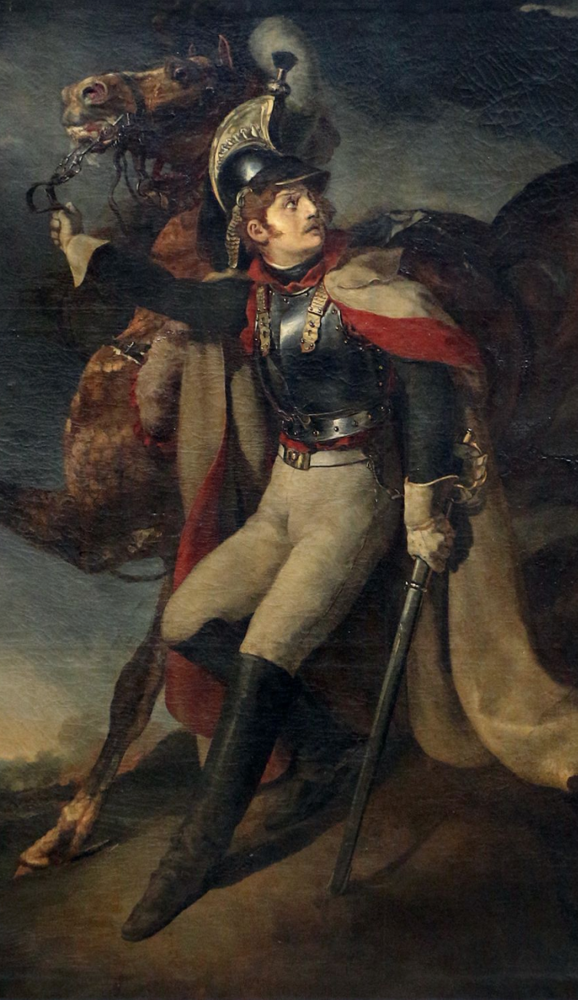

<!--
  Generated template for the ResultatPage page.

  See http://ionicframework.com/docs/components/#navigation for more info on
  Ionic pages and navigation.
-->
<ion-header class="header">
  <ion-navbar [hideBackButton]="true">
    <ion-title>BRAVO !</ion-title>
  </ion-navbar>
</ion-header>


<ion-content padding class="contentPage">

  <div class="containerPage">
    <div class="contentTop">
      TU AS TROUVE LE {{ infos[params.aile].salles[params.salle].oeuvres[params.oeuvre].name }} DE {{ infos[params.aile].salles[params.salle].oeuvres[params.oeuvre].artist }}
    </div>
    <div class="contentBot">
      

    </div>

  </div>
  <button ion-button outline (click)="this.navigate.openPage(nextPage, { 'aile': params.aile, 'salle': params.salle, 'oeuvre': params.oeuvre })" class="contentRules__button">
    <!-- <ion-img class="contentRules__buttonImg" src="../../assets/imgs/arrow-pointing-to-right.png"></ion-img> -->
    <ion-icon class="buttonIcon" name="arrow-round-forward"></ion-icon>
    <!-- -->
  </button>


</ion-content>
